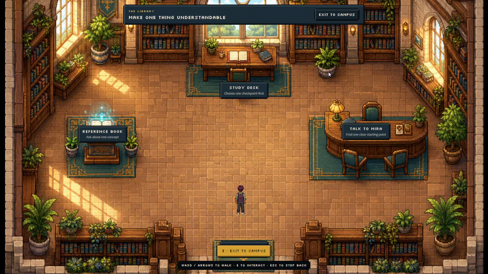
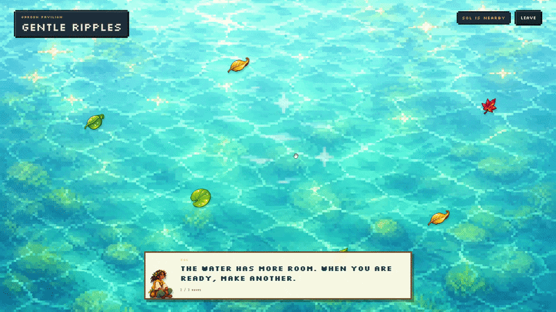
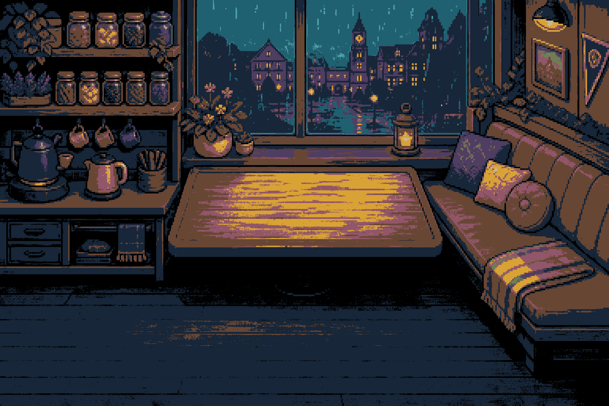
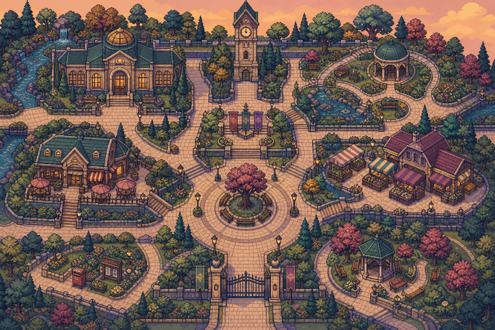

1. Student Friction & Guardian Mindmap
Root Cause & System ArchitectureThe Root Problem
University Burnout & Task Paralysis
Students stall not because they lack motivation, but because accumulated pressure creates an undivided wall of fear with no clear starting point.
The Restorative "Pace Loop" Experience (Live Prototype Clips)

Arrive in Grove
Explore a cozy campus where weekly pressure is expressed as ambient Load Weather rather than red alert numbers.

Make Space with Kai
Preview suggested Thursday task shifts in the Week Board with soft dashed outlines — nothing moves without consent.

Focus with Mira
Break ambiguous homework into 1 concrete checkpoint with an explicit Definition of Done at the study desk.

Recover Without Guilt
Interactive pond ripples and petal drifts. Zero scores, no timers, and full permission to leave anytime.

Return to Context
A soothing tea ritual with Sky. Returning players are greeted with their saved desk state — zero context reconstruction.
2. Market Research & Empirical Validation
Behavioral Evidence & Case PrecedentsScienceDirect Study on Gamified Task Management (2023)
Core Product Takeaway: Gamification isn’t just about making tasks fun — when it creates useful habits and restorative experiences, it gives overwhelmed students a sustainable reason to return without burning out.
Industry Case References & Value Distinction
Demonstrated that students respond enthusiastically to gamified focus when it rewards phone idle time rather than enforcing harsh device lockouts.
Validated that co-presence (having an avatar companion sit with you while working) measurably reduces solo academic isolation and anxiety.
Unlike generic productivity tools (Notion, Google Calendar) that simply list tasks as an intimidating wall, PaceTown actively protects human capacity with explainable loads, consent rebalancing, and zero-guilt rest.
3. Breadth of Exploration — Concept Matrix
Alternative Paradigms EvaluatedThe Strict Warden
Aggressive website blocker + streak tracker that locks devices and penalizes missed deadlines.
Study Tamagotchi
A cute digital pet that falls ill or dies if daily study sessions and tasks are skipped.
Cloud AI Ghostwriter
LLM assistant that generates assignment summaries, outlines, and paragraphs automatically.
PaceTown (Living Campus)
Consent-gated workload rebalancing in a cozy 2D pixel-art campus with local restorative pacing.
4. Prototype Evolution & Discarded Directions
Visual Build ProgressionRed Alert Dashboard
110% OVERLOAD!
Red Alert Dashboard
A standard web table displaying commitments with flashing red percentage warning bars.

Massive Open-World RPG
A sprawling multi-district RPG world requiring 30 seconds of walking between buildings.
Autonomous Auto-Scheduler
An AI algorithm that silently shifted overloaded Thursday tasks into open weekend slots.
Restorative Living Campus
16-frame synced walk cycles, local-first IndexedDB storage, accessible D-pads, and unpenalized recovery.
5. Mentor Consultation Log
Real Feedback & Design DecisionsScope, Precedents & Value Distinction
Mentor Consultation Session · 4 Sept 2026- Articulated our core value distinction: Consent-first rebalancing rather than passive task lists.
- Connected game mechanics to psychological safety (Load Weather instead of red alerts; zero-guilt recovery).
- Structured rich multi-layered process mapping illustrating the user journey from friction to restoration.
Demo Presentation & Feature Bundling
Mentor Consultation Session · 11 Sept 2026- Streamlined the product narrative into 3 core pillars: Smart Time Management, Guided Productivity, and Stress Relief/Recovery.
- Shifted all feature descriptions to student emotional benefit rather than technical form clicks.
- Replaced long text walkthroughs with focused, bite-sized visual gameplay anchors.
- Provided a direct one-click interactive launcher (
index.html) for judges to explore.